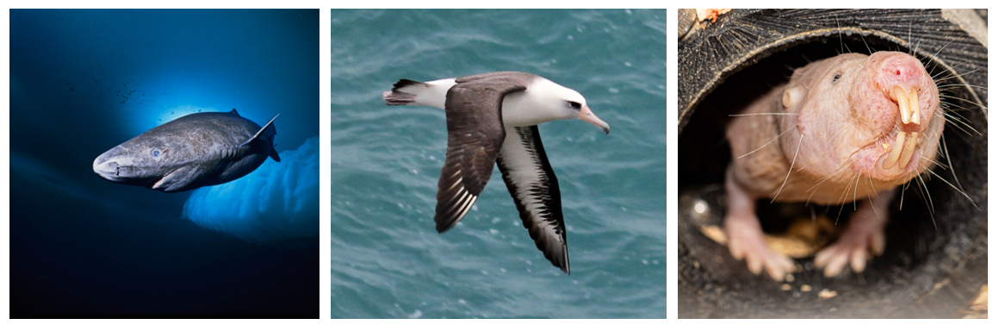
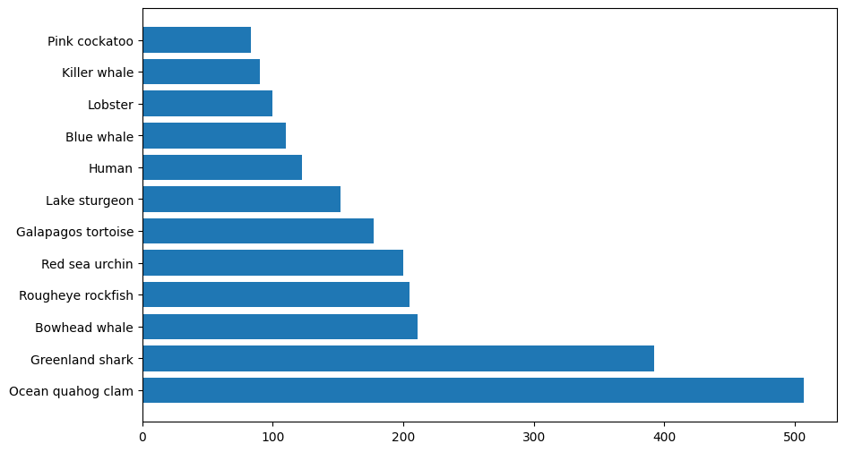
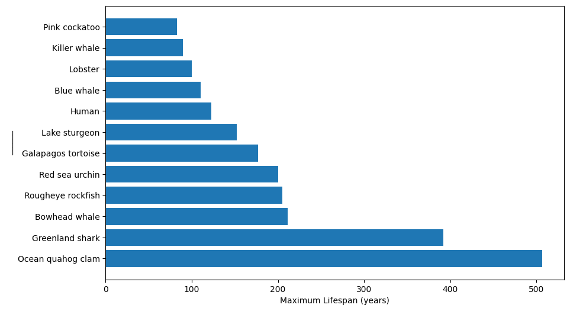
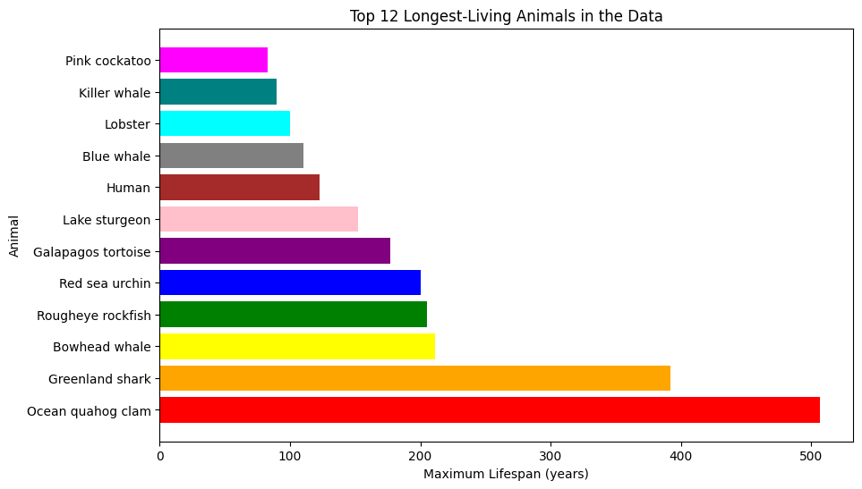
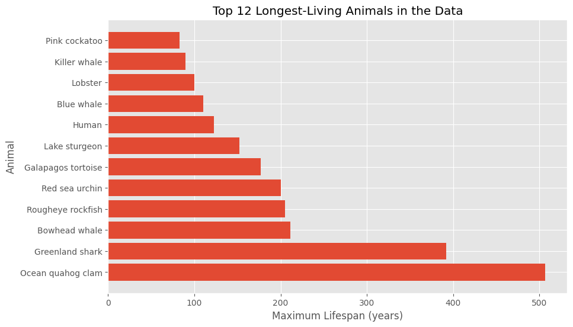
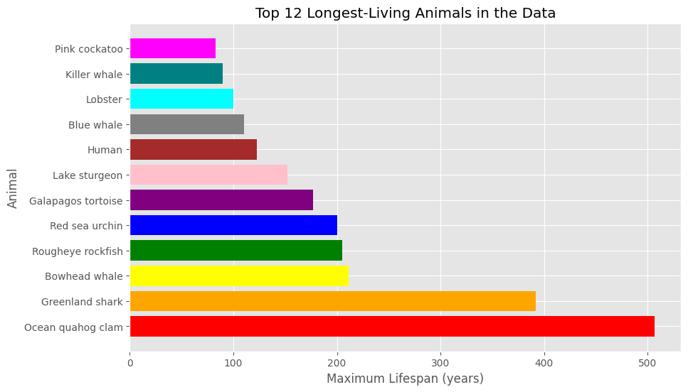
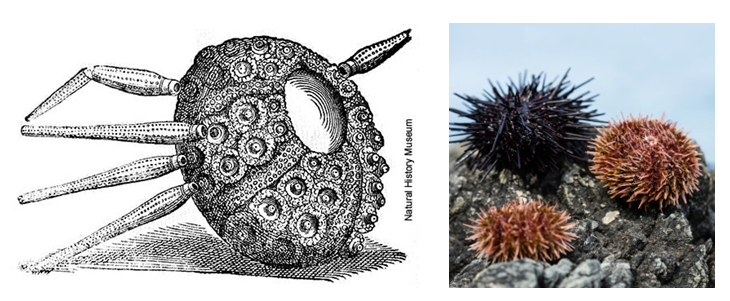
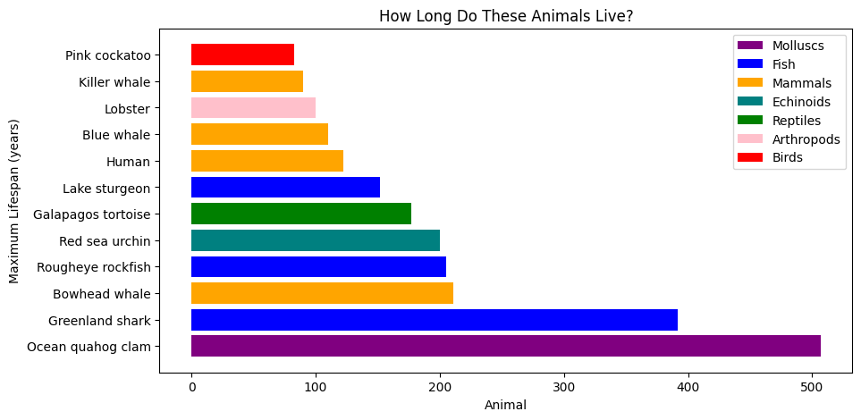
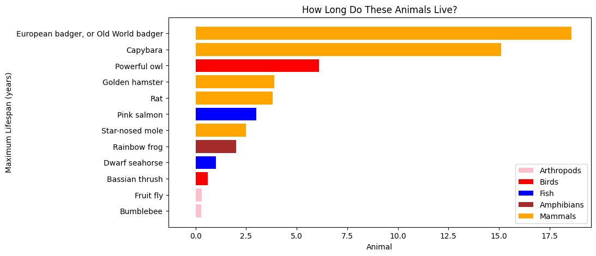

Code
import matplotlib.pyplot as plt
import pandas as pdGraphs are extremely important for communicating data quickly and effectively. You might have created a graph in MicroSoft Excel before. When you do, you have to click around the software to modify the graph’s appearance and what data it uses. This might not take too much time if you’re only doing it once but what if you had to make similar graphs another ten times? A hundred times? Or a thousand times? The process would quickly get very boring, take a lot of time, and you’d be more likely to make mistakes!
We can use Python to write programs that plot our data. The program acts as instructions to create the graph. It’s very customisable and you can use the same code over and over again! Many of the graphs and visualisations you see in magazines, newspapers and social media are created using programming. Data scientists and statisticians create graphs to communicate data to doctors, politicians, CEOs, etc., to influence important decisions.
In this activity you are going to create your own graphs using Python.
Don’t feel nervous if this is your first time using Python and you don’t understand all the code (this is a normal feeling for programmers too). You won’t be asked to write your own from scratch, only to edit what we give you.
The oldest human ever was a French woman named Jeanne Calment. She lived to the age of 122 years and 164 days. Whilst humans can be very long-lived, some animals can live even longer. Understanding what makes these animals live for so long could be important for letting us live longer and healthier lifespans. Below are some examples of long-lived animals:

We are going to create plots to show the maximum lifespan of various animals, both long-lived and short-lived. We will customise our plots in various ways.
Learning objectives: - To understand which types of animals live the longest - To have an introduction to Python - To use Python to create plots of animal maximum ages
Python does not know how to process and plot data on its own. Python packages contain additional commands that don’t come installed with Python, and allow us to carry out certain extra tasks. In this activity we’re going to need to load two known as pandas and matplotlib. Pandas is a package that lets python read and edit data, much like you’d use Excel to process raw data. Matplotlib is the package that then lets us plot the data. We can load them by pasting the following code into our first chunk and pressing the play button:
import matplotlib.pyplot as plt
import pandas as pdAs part of this, we rename the packages to something shorter. ‘Matplotlib.pyplot’ is quite a lot of letters to type every time! Each time we used it we’d have to type:
matplotlib.pyplot.plot
Instead, we can rename the package as we load it to something simple and easy to remember. In this case ‘plt’. So the above line of code would become:
plt.plot
In summary, this is how we load and rename a package:

Next we are going to load our animal ageing data. The data we’re going to be using can be found here. We are going to load it using the package mentioned earlier ‘pandas’. Remember, we have loaded ‘pandas’ and renamed it to ‘pd’.
The code to load the data is below. We have left the space for the URL blank “____” for you to fill in.
data = pd.read_csv("https://raw.githubusercontent.com/CBFLivUni/scholars_event/refs/heads/main/data/animal_ageing_data.csv") # ← Enter the URL of the .csv file hereWe use the read_csv function contained inside the ‘pandas’ package to load the data at the url. We then store it in a variable called ‘data’ using the equals sign.
We can view the data by typing the name of the variable in a code chunk:
data| Type | Common name | Female maturity (days) | Male maturity (days) | Gestation/Incubation (days) | Litter/Clutch size | Litters/Clutches per year | Birth weight (g) | Adult weight (g) | Maximum longevity (yrs) | Specimen origin | Sample size | Data quality | |
|---|---|---|---|---|---|---|---|---|---|---|---|---|---|
| 0 | Molluscs | Ocean quahog clam | 4562.0 | 4780.0 | NaN | NaN | NaN | NaN | 2.260000e+02 | 507.00 | wild | medium | acceptable |
| 1 | Fish | Greenland shark | 56940.0 | NaN | NaN | NaN | NaN | NaN | 4.000000e+05 | 392.00 | wild | small | acceptable |
| 2 | Mammals | Bowhead whale | 8212.0 | 8212.0 | 396.0 | 1.0 | 0.30 | 900000.00 | 1.000000e+08 | 211.00 | wild | medium | acceptable |
| 3 | Fish | Rougheye rockfish | NaN | NaN | NaN | NaN | NaN | NaN | 4.950000e+02 | 205.00 | wild | medium | acceptable |
| 4 | Echinoids | Red sea urchin | 550.0 | 550.0 | NaN | NaN | NaN | NaN | 4.540000e+02 | 200.00 | wild | medium | acceptable |
| 5 | Reptiles | Galapagos tortoise | NaN | NaN | NaN | NaN | NaN | NaN | 2.270000e+05 | 177.00 | captivity | medium | acceptable |
| 6 | Fish | Lake sturgeon | 9490.0 | 2920.0 | 6.0 | 350000.0 | NaN | NaN | 7.000000e+04 | 152.00 | wild | medium | acceptable |
| 7 | Mammals | Human | 4745.0 | 5110.0 | 280.0 | 1.0 | 0.30 | 3312.50 | 6.203500e+04 | 122.50 | captivity | huge | high |
| 8 | Mammals | Blue whale | 1827.0 | 1827.0 | 350.0 | 1.0 | 0.40 | 2000000.00 | 1.360000e+08 | 110.00 | wild | medium | acceptable |
| 9 | Arthropods | Lobster | NaN | NaN | NaN | NaN | NaN | NaN | 5.000000e+02 | 100.00 | wild | medium | acceptable |
| 10 | Mammals | Killer whale | 3780.0 | 4930.0 | 435.0 | 1.0 | 0.20 | 180000.00 | 3.987500e+06 | 90.00 | wild | medium | acceptable |
| 11 | Birds | Pink cockatoo | NaN | NaN | NaN | NaN | NaN | NaN | 3.900000e+02 | 83.00 | captivity | medium | acceptable |
| 12 | Mammals | Asiatic elephant | 3287.0 | 3287.0 | 644.0 | 1.0 | 0.20 | 107000.00 | 3.178000e+06 | 79.60 | captivity | large | acceptable |
| 13 | Birds | Laysan albatross | 3141.0 | 3068.0 | 64.0 | 1.0 | 1.00 | 167.20 | 3.150000e+03 | 70.00 | wild | large | acceptable |
| 14 | Reptiles | West African dwarf crocodile | 1825.0 | 1825.0 | NaN | 10.0 | NaN | NaN | 4.000000e+04 | 70.00 | captivity | medium | acceptable |
| 15 | Birds | Common raven | 1095.0 | 1095.0 | 19.0 | 5.0 | 1.00 | 25.00 | 1.041200e+03 | 69.00 | captivity | medium | acceptable |
| 16 | Birds | Eurasian eagle-owl | 730.0 | 730.0 | NaN | NaN | NaN | NaN | 2.686000e+03 | 68.00 | captivity | large | acceptable |
| 17 | Mammals | Chimpanzee | 3376.0 | 2920.0 | 229.0 | 1.0 | 0.20 | 1821.00 | 4.498350e+04 | 68.00 | captivity | large | acceptable |
| 18 | Mammals | Hippopotamus | 1279.0 | 1279.0 | 234.0 | 1.0 | 0.60 | 40000.00 | 3.750000e+06 | 61.20 | captivity | large | acceptable |
| 19 | Reptiles | Painted turtle | 2750.0 | 1642.0 | NaN | NaN | NaN | NaN | 3.718000e+02 | 61.00 | wild | medium | acceptable |
| 20 | Mammals | Gorilla | 2829.0 | 4015.0 | 256.0 | 1.0 | 0.30 | 2061.40 | 1.398420e+05 | 60.10 | captivity | large | acceptable |
| 21 | Mammals | Horse | 914.0 | 973.0 | 337.0 | 1.0 | 1.00 | 38000.00 | 3.000000e+05 | 57.00 | captivity | large | high |
| 22 | Fish | Great white shark | NaN | 3285.0 | NaN | 6.0 | NaN | NaN | 1.870000e+06 | 50.00 | wild | medium | acceptable |
| 23 | Birds | Golden eagle | 1460.0 | 1460.0 | 40.0 | 2.0 | 1.00 | 110.60 | 4.800000e+03 | 48.00 | captivity | medium | acceptable |
| 24 | Mammals | Polar bear | 1734.0 | 1734.0 | 65.0 | 2.0 | 0.40 | 665.00 | 4.750000e+05 | 43.80 | captivity | medium | acceptable |
| 25 | Mammals | Indian rhinoceros | 1678.0 | 2557.0 | 479.0 | 1.0 | 0.30 | 58000.00 | 1.602330e+06 | 43.50 | captivity | medium | acceptable |
| 26 | Mammals | Naked mole-rat | 228.0 | NaN | 70.0 | 7.0 | 3.50 | 2.00 | 3.500000e+01 | 31.00 | captivity | large | high |
| 27 | Mammals | Domestic dog | 510.0 | 510.0 | 63.0 | 6.0 | NaN | NaN | 4.000000e+04 | 27.00 | captivity | large | acceptable |
| 28 | Mammals | Tiger | 1268.0 | 1415.0 | 105.0 | 2.5 | 0.40 | 1190.00 | 1.197000e+05 | 26.30 | captivity | large | high |
| 29 | Mammals | Snow leopard | 730.0 | 730.0 | 96.0 | 2.0 | 1.00 | 475.00 | 5.000000e+04 | 21.20 | captivity | large | high |
| 30 | Mammals | Gray wolf | 669.0 | 669.0 | 62.0 | 6.0 | 0.80 | 450.00 | 2.662500e+04 | 20.60 | captivity | large | high |
| 31 | Mammals | European badger, or Old World badger | 365.0 | 365.0 | 49.0 | 3.0 | 1.00 | 80.00 | 1.300000e+04 | 18.60 | captivity | medium | acceptable |
| 32 | Mammals | Capybara | 456.0 | 456.0 | 150.0 | 4.8 | 1.25 | 1500.00 | 5.500000e+04 | 15.10 | captivity | large | high |
| 33 | Birds | Powerful owl | NaN | NaN | NaN | NaN | NaN | NaN | 1.324930e+03 | 6.10 | wild | small | questionable |
| 34 | Mammals | Golden hamster | 48.0 | 48.0 | 16.0 | 9.0 | 3.00 | 2.45 | 1.050000e+02 | 3.90 | captivity | medium | acceptable |
| 35 | Mammals | Rat | 90.0 | 70.0 | 21.0 | 9.9 | 3.70 | 5.81 | 3.000000e+02 | 3.80 | captivity | large | acceptable |
| 36 | Fish | Pink salmon | 730.0 | 730.0 | NaN | NaN | NaN | NaN | 3.740000e+03 | 3.00 | wild | medium | acceptable |
| 37 | Mammals | Star-nosed mole | 304.0 | 304.0 | 40.0 | 4.4 | 1.00 | 1.50 | 5.530000e+01 | 2.50 | captivity | small | questionable |
| 38 | Amphibians | Rainbow frog | 365.0 | 365.0 | NaN | NaN | NaN | NaN | 7.000000e+00 | 2.00 | wild | small | questionable |
| 39 | Fish | Dwarf seahorse | 118.0 | 118.0 | NaN | NaN | NaN | NaN | 5.000000e+01 | 1.00 | wild | medium | acceptable |
| 40 | Birds | Bassian thrush | NaN | NaN | NaN | NaN | NaN | NaN | 1.295000e+02 | 0.60 | wild | tiny | acceptable |
| 41 | Arthropods | Fruit fly | 7.0 | 7.0 | NaN | NaN | NaN | NaN | 7.000000e-03 | 0.30 | captivity | large | acceptable |
| 42 | Arthropods | Bumblebee | NaN | NaN | NaN | NaN | NaN | NaN | 7.000000e-01 | 0.27 | captivity | small | acceptable |
There are lots of rows and columns in our data. In the code below we will extract just the oldest animals from the data, and then we will print our their names and lifespans.
# Find the top 8 longest living animals
oldest_animals = data.sort_values("Maximum longevity (yrs)", ascending=False).head(8)
print("\nThe 8 longest-living animals in this dataset are:")
print(oldest_animals[["Common name", "Maximum longevity (yrs)"]])
The 8 longest-living animals in this dataset are:
Common name Maximum longevity (yrs)
0 Ocean quahog clam 507.0
1 Greenland shark 392.0
2 Bowhead whale 211.0
3 Rougheye rockfish 205.0
4 Red sea urchin 200.0
5 Galapagos tortoise 177.0
6 Lake sturgeon 152.0
7 Human 122.5In this code we take our data and sort it in order of longevity. We tell it NOT to do it in ascending order by saying ascending=False. We take the top 8 by including head(8). We then save it in a new variable called ‘oldest animals’.
After that, we print the two colums we are interested in (“Common name” and “Maximum longevity” (yrs)“). Do any of these animals surprise you?
Challenge 1: Can you modify the above code so that ‘oldest_animals’ has the 12 most long-lived animals instead?
Challenge 2: Can you make another variable called ‘shortest_lived_animals’ that has the 12 most short-lived animals?
# Challenge 1
oldest_animals = data.sort_values("Maximum longevity (yrs)", ascending=False).head(12)
print("\nThe 12 longest-living animals in this dataset are:")
print(oldest_animals[["Common name", "Maximum longevity (yrs)"]])
The 12 longest-living animals in this dataset are:
Common name Maximum longevity (yrs)
0 Ocean quahog clam 507.0
1 Greenland shark 392.0
2 Bowhead whale 211.0
3 Rougheye rockfish 205.0
4 Red sea urchin 200.0
5 Galapagos tortoise 177.0
6 Lake sturgeon 152.0
7 Human 122.5
8 Blue whale 110.0
9 Lobster 100.0
10 Killer whale 90.0
11 Pink cockatoo 83.0# Challenge 2
shortest_lived_animals = data.sort_values("Maximum longevity (yrs)", ascending=True).head(12)
print("\nThe 12 shortest-lived animals in this dataset are:")
print(shortest_lived_animals[["Common name", "Maximum longevity (yrs)"]])
The 12 shortest-lived animals in this dataset are:
Common name Maximum longevity (yrs)
42 Bumblebee 0.27
41 Fruit fly 0.30
40 Bassian thrush 0.60
39 Dwarf seahorse 1.00
38 Rainbow frog 2.00
37 Star-nosed mole 2.50
36 Pink salmon 3.00
35 Rat 3.80
34 Golden hamster 3.90
33 Powerful owl 6.10
32 Capybara 15.10
31 European badger, or Old World badger 18.60We are now going to create a simple horizontal bar plot of the 12 most long-lived animals. In the code below:
We have left the name of the column containing the lifespan data blank “______” can you fill it in below with the correct column name? (Hint: look at what columns we printed above.)
plt.figure(figsize=(10, 6))
plt.barh(oldest_animals["Common name"], oldest_animals["Maximum longevity (yrs)"]) # ← Which column shows lifespan?
plt.show()
So far this is quite a simple plot, and it doesn’t have any labels or units for the x- and y- axes - this would be considered a poor graph in reality!
With matplotlib (our Python plotting package) we can keep adding layers of new information to our plot. We are now going to fill in the x- and y- axis. However, we have left the y-axis blank for you to fill in with a suitable name.
plt.figure(figsize=(10, 6))
plt.barh(oldest_animals["Common name"], oldest_animals["Maximum longevity (yrs)"])
plt.xlabel("Maximum Lifespan (years)")
plt.ylabel("______") # ← Label for y-axis
plt.show()
We have now created a simple plot of animal longevity!
Our graph above looks quite good but we might want to customise it more to our liking. We could first change the colours. We do this by passing an additional ‘argument’ to our command plt to let it know the colours we want to use. An example of changing all the colours of our graph is below. (Note: the spelling of ‘colour’ is American in python).
We have also added a title to our graph to explain what we are seeing.
plt.figure(figsize=(10, 6))
plt.barh(oldest_animals["Common name"], oldest_animals["Maximum longevity (yrs)"],
color=["red", "orange", "yellow", "green", "blue", "purple", "pink", "brown", "gray", "cyan", "teal", "magenta"])
plt.xlabel("Maximum Lifespan (years)")
plt.ylabel("Animal")
plt.title("Top 12 Longest-Living Animals in the Data")
plt.show()
You can use any colours you like to customise the graph. You just have to change the name of the colours inside the ‘color’ argument. The ones below all come included with matplotlib.

As well as the colours that come included, matplotlib lets you to pick any colour using a hexcode (a 6 character number/letter code after a hash/#).
We can create hexcodes for colours using some of these links:
The last link will allow you to create a colour palette from an image and give you the hex codes for the palette.

Challenge: can you change the colours of the graph to ones of your chosing
Can you change the colours using their names?
Can you change the colours using hexcodes instead?
Challenge 1: Can you change the colours of the graph using the inbuilt colour names in matplotlib?
Challenge 2: Can you change the colours using hexcodes instead? Maybe you could pick colours that remind you of the animals? If you’re unsure what they look like then use Google to check. Otherwise, just select colours you like. ☺
# Challenge 1# Challenge 2Another way we can modify our graph is by using a different ‘theme’. Themes are different ways of styling the plot, for example background colour, default bar colours, fonts, gridlines, etc. Matplotlib comes with prepared styles that you can use to modify your graph.
We can then see a list of which styles we can use using this code:
plt.style.available['Solarize_Light2',
'_classic_test_patch',
'_mpl-gallery',
'_mpl-gallery-nogrid',
'bmh',
'classic',
'dark_background',
'fast',
'fivethirtyeight',
'ggplot',
'grayscale',
'seaborn',
'seaborn-bright',
'seaborn-colorblind',
'seaborn-dark',
'seaborn-dark-palette',
'seaborn-darkgrid',
'seaborn-deep',
'seaborn-muted',
'seaborn-notebook',
'seaborn-paper',
'seaborn-pastel',
'seaborn-poster',
'seaborn-talk',
'seaborn-ticks',
'seaborn-white',
'seaborn-whitegrid',
'tableau-colorblind10']An example of one of the styles applied to our graph is below:
plt.style.use('ggplot')
plt.figure(figsize=(10, 6))
plt.barh(oldest_animals["Common name"], oldest_animals["Maximum longevity (yrs)"])
plt.xlabel("Maximum Lifespan (years)")
plt.ylabel("Animal")
plt.title("Top 12 Longest-Living Animals in the Data")
plt.show()
Challenge 1: pick a style! Apply it to your graph instead of the one used in the example above. Try a few, which do you like best?
Challenge 2: Can you include a theme AND your custom colours?
# Challenge 1 # Challenge 2
plt.style.use('ggplot')
plt.figure(figsize=(10, 6))
plt.barh(oldest_animals["Common name"], oldest_animals["Maximum longevity (yrs)"],
color=["red", "orange", "yellow", "green", "blue", "purple", "pink", "brown", "gray", "cyan", "teal", "magenta"])
plt.xlabel("Maximum Lifespan (years)")
plt.ylabel("Animal")
plt.title("Top 12 Longest-Living Animals in the Data")
plt.show()
If you don’t want to use a theme and prefer the default appearance, you can change it back at any time by running this block of code.
plt.style.use('default')Well done! You have now learned how to create a plot of using Python.
Now, using everything we’ve learned, can you modify the code to create a plot of the shortest-lived animals in the dataset - remember that earlier in the activity we created a variable storing the data called shortest_lived_animals.
Don’t worry if this part proves tricky and ask the teachers for help at any point if you get stuck!
This section is entirely optional and you should only attempt it if you have completed all the challenges above!
When we first looked at our dataset at the start it had columns containing extra information. One column of interest is “type”, which lets us know what type of animal they are (mammal, reptile, etc). Let’s manually inspect what type of animal the longest-lived animals are…
print(oldest_animals[["Type", "Common name", "Maximum longevity (yrs)"]]) Type Common name Maximum longevity (yrs)
0 Molluscs Ocean quahog clam 507.0
1 Fish Greenland shark 392.0
2 Mammals Bowhead whale 211.0
3 Fish Rougheye rockfish 205.0
4 Echinoids Red sea urchin 200.0
5 Reptiles Galapagos tortoise 177.0
6 Fish Lake sturgeon 152.0
7 Mammals Human 122.5
8 Mammals Blue whale 110.0
9 Arthropods Lobster 100.0
10 Mammals Killer whale 90.0
11 Birds Pink cockatoo 83.0Are there any of these you haven’t heard of before?
For example, echinoids are animals that have a spikey hard shell. Echinoids evolved about 450 million years ago, which is about 220 million years before first dinosaurs appeared! Today we would commonly think of them as ‘sea urchins’ but there are plenty of fossils of ancient echinoids. Below is an artist’s rendition of one vs some red and black sea urchins.

It would be useful to colour our graph by the different animal types. This would give our colours more meaning and also allow us to see if there are any patterns in the data. First, we will store all the unique types of animals in a new variable called ‘types’. We can print ‘types’ to see what this includes.
types = oldest_animals['Type']
print(types)0 Molluscs
1 Fish
2 Mammals
3 Fish
4 Echinoids
5 Reptiles
6 Fish
7 Mammals
8 Mammals
9 Arthropods
10 Mammals
11 Birds
Name: Type, dtype: objectNow we are going to create a colour map for the different types of animals.
This code is a little more complex so don’t try to understand all of it. To summarise, we first manually create a colour map for our different types of animals. Then we create a ‘list’, which is a type of information Python can work with to set the colours.
# Pick a color for each type of animal
color_map = {
'Molluscs': 'purple',
'Fish': 'blue',
'Mammals': 'orange',
'Echinoids': 'teal',
'Reptiles': 'green',
'Arthropods': 'pink',
'Birds': 'red'
}
# Create a list of colors based on each animal's type
bar_colors = [color_map.get(t, 'gray') for t in types]
We can then use our colour map in our plotting code. This includes an aditional step where we manually add a legend too so we can see which colour corresponds to which type of animal.
# Plot
plt.figure(figsize=(10, 5))
plt.barh(oldest_animals["Common name"], oldest_animals["Maximum longevity (yrs)"], color=bar_colors)
plt.xlabel("Animal")
plt.ylabel("Maximum Lifespan (years)")
plt.title("How Long Do These Animals Live?")
# Add a legend manually
legend_labels = {v: k for k, v in color_map.items()}
for color in legend_labels:
plt.bar(0, 0, color=color, label=legend_labels[color]) # invisible bars for legend
plt.legend()
# Show the plot
plt.show()
From this, we can see that many of the most long-lived animals in our dataset are mammals, in particular whales and humans! The longest-lived animal is a mollusc, but there is only one of them.
The full code to generate the graph is below:
types = oldest_animals['Type']
# Pick a color for each type of animal
color_map = {
'Molluscs': 'purple',
'Fish': 'blue',
'Mammals': 'orange',
'Echinoids': 'teal',
'Reptiles': 'green',
'Arthropods': 'pink',
'Birds': 'red'
}
# Create a list of colors based on each animal's type
bar_colors = [color_map.get(t, 'gray') for t in types]
# Plot
plt.figure(figsize=(10, 5))
plt.barh(oldest_animals["Common name"], oldest_animals["Maximum longevity (yrs)"], color=bar_colors)
plt.xlabel("Animal")
plt.ylabel("Maximum Lifespan (years)")
plt.title("How Long Do These Animals Live?")
# Add a legend manually
legend_labels = {v: k for k, v in color_map.items()}
for color in legend_labels:
plt.bar(0, 0, color=color, label=legend_labels[color]) # invisible bars for legend
plt.legend()
# Show the plot
plt.show()
Challenge 1: Using the above code, can you modify the colour map and assign your own colours to the types of animals?
Challenge 2: Can you repeat the same steps as above to colour code the data for the shortest-lived animals?
# Challenge 1# Challenge 2 - check what types of animals there are
types = shortest_lived_animals['Type']
print(types)
# 5 unique types of animal: Arthropods, Birds, Fish, Amphibians, Mammals42 Arthropods
41 Arthropods
40 Birds
39 Fish
38 Amphibians
37 Mammals
36 Fish
35 Mammals
34 Mammals
33 Birds
32 Mammals
31 Mammals
Name: Type, dtype: object# Challenge 2 - create the colour map and graph
color_map = {
'Arthropods': 'pink',
'Birds': 'red',
'Fish': 'blue',
'Amphibians': 'brown',
'Mammals': 'orange'
}
# Create a list of colors based on each animal's type
bar_colors = [color_map.get(t, 'gray') for t in types]
# Plot
plt.figure(figsize=(10, 5))
plt.barh(shortest_lived_animals["Common name"], shortest_lived_animals["Maximum longevity (yrs)"], color=bar_colors)
plt.xlabel("Animal")
plt.ylabel("Maximum Lifespan (years)")
plt.title("How Long Do These Animals Live?")
# Add a legend manually
legend_labels = {v: k for k, v in color_map.items()}
for color in legend_labels:
plt.bar(0, 0, color=color, label=legend_labels[color]) # invisible bars for legend
plt.legend()
# Show the plot
plt.show()
If you got this far then well done, that concludes all of our activities!